Capítulo 13 Testes de hipóteses
13.2 Testes de hipóteses sobre a proporção
13.2.1 Exemplo: proporção de bebês do sexo masculino
Um estudo de 1994 feito em Punjab, na Índia, relata que \(56{,}9\%\) dos \(550\) bebês nascidos em um ano em uma maternidade da região eram do sexo masculino.
Segundo estudos anteriores, \(51{,}7\%\) dos bebês nascidos por ano nessa região são meninos.
Agora que a população tem acesso a exames que determinam o sexo do feto durante a gravidez, existem suspeitas de que fetos do sexo feminino estão sendo abortados pelos pais, por motivos culturais.
A evidência é suficiente para afirmar que a proporção de bebês meninos na maternidade do estudo é maior do que a proporção da região?
Hipóteses
Um teste de hipóteses sempre vai ter duas hipóteses.
-
A primeira hipótese é a apresentada como “padrão”. Esta é a hipótese que vai ser “desafiada”. O nome técnico para esta hipótese é hipótese de nulidade, ou hipótese nula. A hipótese de nulidade sempre envolve uma igualdade. e costuma ser chamada \(H_0\). No exemplo,
\[ H_0 : p = 0{,}517 \]
Ou seja, a proporção de meninos nascidos na maternidade do estudo é de \(51{,}7\%\), como no restante da região.
-
A segunda hipótese, chamada hipótese alternativa, contradiz de alguma maneira a hipótese de nulidade. No exemplo, vamos trabalhar com
\[ H_A : p > 0{,}517 \]
Ou seja, a verdadeira proporção de meninos nascidos na maternidade do estudo é maior que \(51{,}7\%\).
Condições
O teste de hipóteses também se baseia no TCL.
-
Precisamos verificar as condições:
Independência: os sexos dos bebês são independentes entre si? Vamos supor que sim.
Amostra aleatória e representativa: a amostra são os \(550\) bebês nascidos na maternidade em questão. Não vamos poder generalizar nossas conclusões para outras maternidades, nem outras regiões. Na verdade, a população consiste em todos os bebês nascidos nessa maternidade, nesse e em outros anos. Vamos supor que os números desse ano são compatíveis com os números de outros anos.
Tamanho da amostra: temos mais do que \(30\) elementos, e a amostra é menor do que \(10\%\) da população.
Quantidades de sucessos e fracassos potenciais: considerando meninos como sucesso, a hipótese de nulidade diz que deveria haver \(550 \times 0{,}517 = 284{,}35\) sucessos e \(550 \times 0{,}483 = 265{,}65\) fracassos na amostra, mais do que os \(10\) exigidos.
Valores
Tamanho da amostra: \(n = 550\)
Proporção amostral: \(\hat p = 0{,}57\)
Hipótese de nulidade: \(H_0 : p = 0{,}517\)
Hipótese alternativa: \(H_A : p > 0{,}517\)
Nível de confiança: como com os intervalos de confiança, escolhemos \(0{,}95\). Mas, em testes de hipóteses, trabalhamos com \(1 - 0{,}95 = 0{,}05\) e chamamos este valor de nível de significância, escrito \(\alpha = 0{,}05\).
Estratégia
Sempre começamos supondo que \(H_0\) é verdadeira. No exemplo, isto significa supor que \(p = 0{,}517\).
Com isso, construímos a distribuição amostral de \(\hat p\), que vai ter como média o valor suposto de \(p\).
Usando esta distribuição amostral, calculamos a probabilidade de obter uma amostra como a que obtivemos (com \(\hat p = 0{,}569\)) ou mais extrema (com \(\hat p > 0{,}569\)).
A probabilidade calculada é chamada de valor \(p\).
Se o valor \(p\) for muito baixo, isto indica que, supondo \(H_0\), nossa amostra é muito improvável e serve como evidência contra \(H_0\). Dizemos, então, que rejeitamos \(H_0\).
Se o valor \(p\) for alto, isto indica que, supondo \(H_0\), nossa amostra não tem nada de inesperado, e não é evidência contra \(H_0\). Não podemos rejeitar \(H_0\).
“Baixo” ou “alto” são definidos em função do nível de significância \(\alpha\).
A distribuição amostral de \(\hat p\), supondo \(H_0\)
-
Pelo TCL e supondo \(H_0\), a distribuição amostral das proporções vai ser normal, com média \(\mu = p = 0{,}52\) e erro-padrão
\[ \sigma_{\hat p} = \sqrt{\frac{p(1-p)}{n}} = 0{,}02 \]
-
Graficamente:
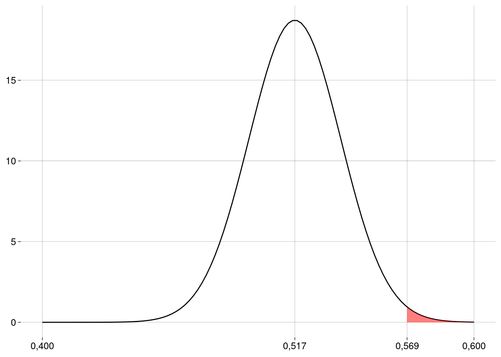
O valor \(p\) e a conclusão
-
O valor \(p\) vai ser a probabilidade que corresponde à área em vermelho, que pode ser calculada em R:
n <- 550 p_chapeu <- 0.569 p0 <- 0.517 ep <- sqrt(p0 * (1 - p0) / n) valor_p <- pnorm(p_chapeu, mean = p0, sd = ep, lower.tail = FALSE) valor_p## [1] 0,007334952 Este valor é muito menor do que \(\alpha = 0{,}05\). Logo, nossa amostra é evidência para rejeitar a hipótese de nulidade neste nível de significância. Concluímos que essa maternidade tem uma proporção de nascimentos de meninos maior do que \(0{,}52\), com \(\alpha = 0{,}05\).
Outros níveis de significância usados na prática são \(\alpha = 0{,}1\) (menos exigente) e \(\alpha = 0{,}01\) (mais exigente). Em algumas áreas, como na Física, são usados níveis de significância mais exigentes ainda, como \(\alpha = 0{,}0000003\) no experimento que confirmou a existência do bóson de Higgs.
Em R
prop.test(
x = p_chapeu * n, # número de sucessos
n = n, # tamanho da amostra
p = p0, # valor de p na hipótese de nulidade
alternative = 'greater', # hipótese alternativa é p > p0
conf.level = .95, # 1 - α (o default já é .95)
correct = FALSE # sem correção de continuidade
)##
## 1-sample proportions test without continuity correction
##
## data: p_chapeu * n out of n, null probability p0
## X-squared = 5,9557, df = 1, p-value = 0,007335
## alternative hypothesis: true p is greater than 0,517
## 95 percent confidence interval:
## 0,5340128 1,0000000
## sample estimates:
## p
## 0,56913.2.2 Exemplo: percepção extra-sensorial
Um suposto vidente alega que consegue detectar os naipes de cartas colocadas viradas para baixo, diante dele, em uma mesa.
Em um experimento, um pesquisador apresenta ao suposto vidente \(50\) cartas, escolhidas ao acaso dentre as cartas de \(10\) baralhos, e o suposto vidente acerta o naipe de \(10\) delas.
O pesquisador diz ao suposto vidente que ele teve menos acertos do que se ele tivesse adivinhado ao acaso: \(50 \times 1/4 = 12{,}50\).
O suposto vidente diz que isso também é evidência dos seus poderes: os erros foram causados por “interferência”, pois o suposto vidente estava captando informações sobre o naipe da carta, mas não conseguiu interpretá-las corretamente.
Hipóteses
-
A hipótese de nulidade diz que o suposto vidente não tem poderes; a verdadeira proporção de acertos sempre vai ser, a princípio, \(1/4\) da quantidade de cartas:
\[ p = 0{,}25 \]
-
A hipótese alternativa reflete os argumentos do suposto vidente de que uma proporção significativamente maior ou significativamente menor do que \(25\%\) indica a existência de poderes extra-sensoriais:
\[ p \neq 0{,}25 \]
A hipótese alternativa, agora, vai gerar um teste bilateral.
Condições
Independência: Vamos supor que acertar o naipe de uma carta independe de acertar o naipe de outra carta. Por exemplo, podemos supor que a dificuldade de acertar o naipe de uma carta é sempre a mesma, independente da carta, da ordem em que elas aparecem etc. O fato de que as \(50\) cartas foram escolhidas dentre \(10\) baralhos (\(520\) cartas, no total) nos permite considerar que os naipes das cartas escolhidas são independentes. Além disso, se não quisermos que o suposto vidente “conte” os naipes das cartas durante o experimento, podemos decidir só revelar os naipes das \(50\) cartas depois que o suposto vidente tiver registrado seus palpites.
Amostra aleatória e representativa: A população é o conjunto de todas as cartas que poderiam ser escolhidas para o suposto vidente poder exercer seus poderes. As \(50\) cartas, escolhidas ao acaso, representam de forma adequada esta população.
Tamanho da amostra: temos mais do que \(30\) elementos, e a amostra é menor do que \(10\%\) da população (que é infinita).
Quantidades de sucessos e fracassos potenciais: a hipótese de nulidade diz que deveria haver \(50 \times 1/4 = 12{,}50\) sucessos e \(50 \times 3/4 = 37{,}50\) fracassos na amostra, mais do que os \(10\) exigidos.
Valores
Tamanho da amostra: \(n = 50\)
Proporção amostral: \(\hat p = 0{,}20\)
Hipótese de nulidade: \(H_0 : p = 0{,}25\)
Hipótese alternativa: \(H_A : p \neq 0{,}25\)
Nível de significância: \(\alpha = 0{,}05\)
Estratégia
Começamos supondo que \(H_0\) é verdadeira: \(p = 0{,}25\).
Com isso, construímos a distribuição amostral de \(\hat p\), que vai ter como média o valor suposto de \(p\).
Usando esta distribuição amostral, calculamos a probabilidade de obter uma amostra como a que obtivemos ou mais extrema (mais distante de \(0{,}25\)).
A distribuição amostral de \(\hat p\), supondo \(H_0\)
-
Pelo TCL e supondo \(H_0\), a distribuição amostral das proporções vai ser normal, com média \(\mu = p = 0{,}25\) e erro-padrão
\[ \sigma_{\hat p} = \sqrt{\frac{p(1-p)}{n}} = 0{,}06 \]
-
Graficamente:
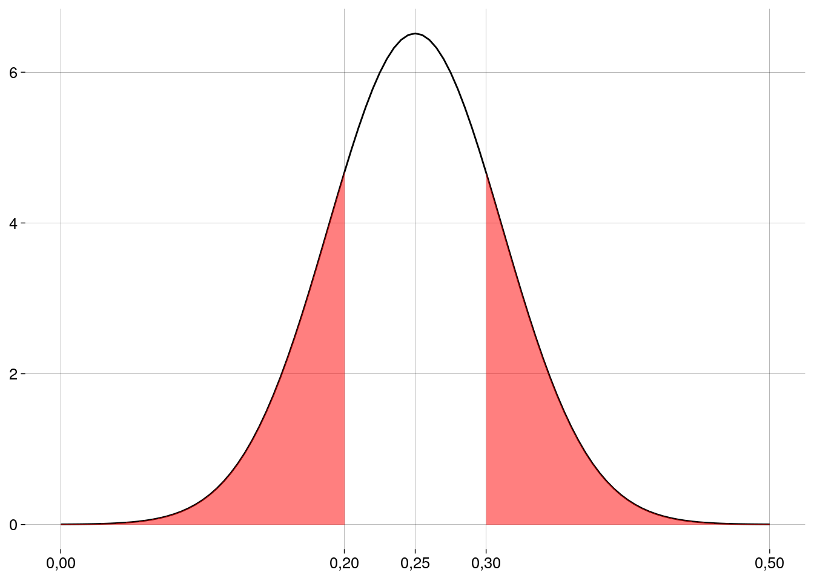
O valor \(p\) e a conclusão
-
O valor \(p\) vai ser a probabilidade que corresponde à área em vermelho, que pode ser calculada em R:
sucessos <- 10 n <- 50 p0 <- 1/4 p_chapeu <- sucessos / n ep <- sqrt(p0 * (1 - p0) / n) p_cauda_direita <- p0 + (p0 - p_chapeu) valor_p <- pnorm(p_chapeu, mean = p0, sd = ep) + pnorm(p_cauda_direita, mean = p0, sd = ep, lower.tail = FALSE) valor_p## [1] 0,4142162 Este valor é maior do que \(\alpha = 0{,}05\). Logo, nossa amostra não é evidência para rejeitar a hipótese de nulidade neste nível de significância.
Em R
prop.test(
x = sucessos, # número de sucessos
n = n, # tamanho da amostra
p = p0, # valor de p na hipótese de nulidade
alternative = 'two.sided', # hipótese alternativa é p != p0
conf.level = .95, # 1 - α (o default já é .95)
correct = FALSE # sem correção de continuidade
)##
## 1-sample proportions test without continuity correction
##
## data: sucessos out of n, null probability p0
## X-squared = 0,66667, df = 1, p-value = 0,4142
## alternative hypothesis: true p is not equal to 0,25
## 95 percent confidence interval:
## 0,1124375 0,3303711
## sample estimates:
## p
## 0,213.2.3 Erros, poder e tamanho do efeito
Rejeitar \(\times\) não rejeitar
Em um teste de hipóteses, nada é provado.
Se o valor \(p\) for menor do que \(\alpha\), você deve concluir que existem evidências para rejeitar a hipótese de nulidade.
Se o valor \(p\) for maior do que \(\alpha\), você deve concluir que não existem evidências para rejeitar a hipótese de nulidade.
-
Seja como for, você deve incluir na sua conclusão
As hipóteses.
O valor da estatística envolvida no teste (aqui, a proporção amostral).
O tamanho da amostra.
O valor de \(\alpha\).
O valor \(p\).
A informação de se o teste é unilateral ou bilateral.
-
Como nada é provado, existe a possibilidade de acontecer um erro:
Você pode rejeitar \(H_0\) quando ela é verdadeira, ou
Você pode não rejeitar \(H_0\) quando ela é falsa.
Erro tipo 1: rejeitar quando não devíamos
Falso positivo.
Diagnosticar como doente um paciente saudável.
Condenar um réu inocente.
Um erro tipo \(1\) só acontece quando a hipótese de nulidade é verdadeira.
A probabilidade de um erro tipo \(1\) acontecer é a probabilidade de a nossa amostra ser uma amostra “ruim”.
Mas a probabilidade de a amostra ser ruim é exatamente \(\alpha\).
Então, a probabilidade de um erro tipo \(1\) é sempre igual a \(\alpha\).
Erro tipo 2: não rejeitar quando devíamos
Falso negativo.
Diagnosticar como saudável um paciente doente.
Absolver um réu culpado.
Um erro tipo \(2\) só acontece quando a hipótese de nulidade é falsa.
Qual a probabilidade de um erro tipo \(2\) acontecer? Vamos chamar esta probabilidade de \(\beta\).
É difícil calcular \(\beta\), porque a hipótese alternativa não fixa um valor para o parâmetro sendo testado; então, não sabemos qual distribuição amostral usar.
A probabilidade \(\beta\) de um erro tipo \(2\) diminui à medida que \(\alpha\) aumenta.
Um \(\alpha\) maior torna mais difícil rejeitar a hipótese de nulidade.
Poder de um teste
O “melhor” resultado do teste é rejeitar \(H_0\) quando ela é falsa.
Isto acontece com probabilidade \(1 - \beta\).
Este é o poder (ou potência) do teste: a capacidade de detectar a diferença entre o valor do parâmetro em \(H_0\) e o valor verdadeiro do parâmetro.
Mas não é uma boa idéia aumentar \(\alpha\) para aumentar o poder, pois isto aumenta a chance de um erro tipo \(1\).
A melhor maneira de diminuir \(\alpha\) e \(\beta\) ao mesmo tempo é aumentando o tamanho da amostra.
Podemos calcular o tamanho da amostra necessário para que o poder do teste tenha um certo valor, mas isto depende de mais informação.
O tamanho do efeito
Diferença entre o valor do parâmetro em \(H_0\) e o valor verdadeiro do parâmetro.
Efeitos maiores são mais fáceis de detectar.
Efeitos menores são mais difíceis de detectar.
O poder de um teste também depende do tamanho do efeito.
13.2.4 Exercícios
Usando binom.test
No exemplo dos bebês, calcule a quantidade de nascimentos de meninos na amostra. O que há de estranho?
-
A função
binom.test, de R base, também faz teste de hipótese para a proporção (embora usando um algoritmo diferente do nosso). Rode o seguinte código:binom.test( x = p_chapeu * n, # número de sucessos n = n, # tamanho da amostra p = p0, # valor de p na hipótese de nulidade alternative = 'greater', # hipótese alternativa é p > p0 conf.level = .95 # 1 - α )O que dá errado? Por quê? Como consertar?
Outro suposto vidente
-
O experimento do exemplo é repetido com outra pessoa, que acerta o naipe de \(17\) das \(50\) cartas. Refaça o teste de hipóteses com este novo valor, de duas maneiras:
Com um teste bilateral: \(H_A : p \neq 0{,}25\).
Com um teste unilateral: \(H_A : p > 0{,}25\).
Quais as suas conclusões?
13.4 Testes de hipóteses sobre a média
13.4.1 Exemplo: duração da gestação
O tempo de gestação em seres humanos segue a distribuição normal, com média \(\mu = 280\) dias e desvio-padrão \(\sigma = 10\) dias.
Em uma amostra de \(n = 25\) bebês nascidos em uma clínica, o tempo médio de gestação foi de \(\bar x = 275\) dias.
Esta amostra é evidência de que a duração média da gestação humana é diferente de \(280\) dias?
Hipóteses
-
A hipótese de nulidade diz que a duração média da gestação é de \(280\) dias:
\[ H_0 : \mu = 280 \]
-
A hipótese alternativa diz que duração média da gestação é diferente de \(280\) dias:
\[ H_A : \mu \neq 280 \]
Condições
Verifique que as condições de independência, aleatoriedade, representatividade e tamanho da amostra são satisfeitas.
Como a distribuição da população é normal, podemos aceitar \(n = 25\).
Valores
Tamanho da amostra: \(n = 25\)
Média amostral: \(\bar x = 275\)
Hipótese de nulidade: \(H_0 : \mu = 280\)
Hipótese alternativa: \(H_A : \mu \neq 280\)
Nível de significância: \(\alpha = 0{,}05\)
O valor \(p\) e a conclusão
Como a hipótese alternativa envolve “\(\neq\)”, o teste é bilateral.
Já sabemos \(\sigma\) (o desvio-padrão populacional). Não precisamos do desvio-padrão amostral.
-
A distribuição amostral vai ser a normal com média \(\mu = 280\) e desvio-padrão
\[ EP = \frac{\sigma}{\sqrt{n}} = \frac{10}{\sqrt{25}} = 2 \]
Usando esta distribuição amostral, calculamos a probabilidade de obter uma amostra como a que obtivemos (com a média amostral \(5\) dias menor ou maior que a média suposta por \(H_0\)) ou mais extrema.
-
O valor \(p\) vai ser esta probabilidade.
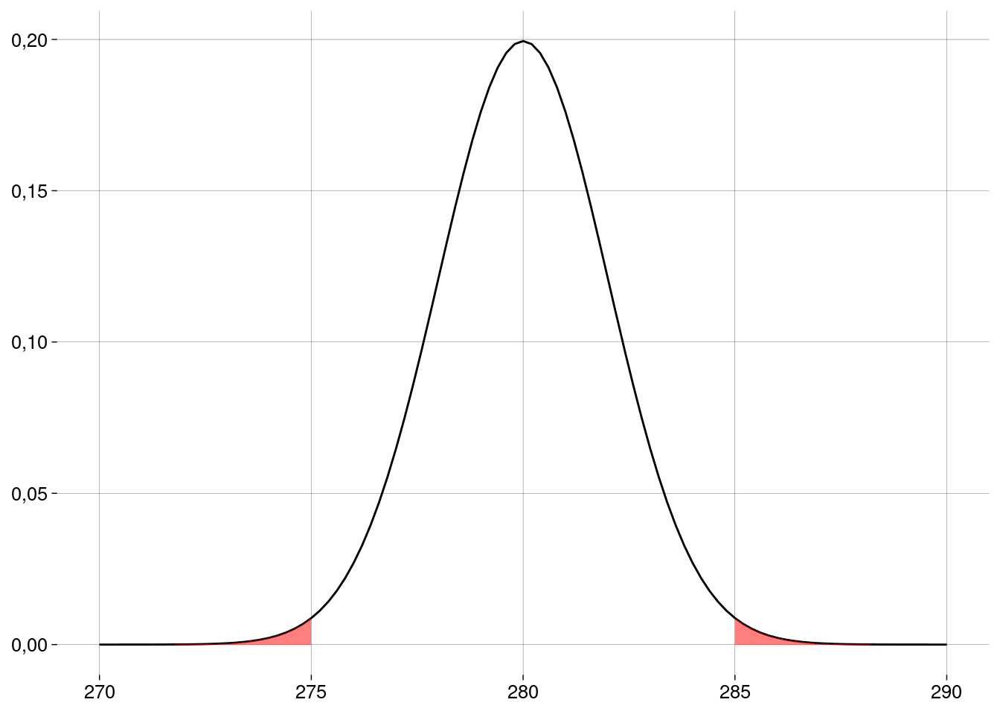 -
Calculando em R:
xbar <- 275 σ <- 10 n <- 25 ep <- σ / sqrt(n) m0 <- 280 dif <- abs(m0 - xbar) valor_p <- pnorm(xbar, m0, ep) + pnorm(m0 + dif, m0, ep, lower.tail = FALSE) valor_p## [1] 0,01241933 Este valor é menor do que \(\alpha = 0{,}05\). Logo, nossa amostra é evidência para rejeitar a hipótese de nulidade neste nível de significância.
Pode parecer surpreendente que \(5\) dias façam tanta diferença assim. O problema é que o desvio-padrão da população é relativamente baixo: \(10\) dias. A variação é pequena. Por isso a diferença entre a média amostral e a média afirmada em \(H_0\) é significativa.
Visto de outro modo: como \(\sigma\) é um valor pequeno, o erro-padrão (i.e., o desvio-padrão da distribuição amostral) também é pequeno; a distribuição amostral, vista na figura acima, é bem estreita, com boa parte da probabilidade bem próxima da média.
Em R
-
Vamos carregar um pacote que implementa o teste z:
-
Esta função recebe o resumo (summary) da amostra:
zsum.test( mean.x = xbar, sigma.x = σ, n.x = n, alternative = 'two.sided', mu = m0 )## ## One-sample z-Test ## ## data: Summarized x ## z = -2,5, p-value = 0,01242 ## alternative hypothesis: true mean is not equal to 280 ## 95 percent confidence interval: ## 271,0801 278,9199 ## sample estimates: ## mean of x ## 275
13.4.2 Exemplo: salmões novamente
Numa amostra de \(150\) salmões, foi medida a concentração do contaminante mirex, um inseticida banido pela Convenção de Estocolmo.
-
As concentrações (em ppm) estão resumidas na tabela abaixo.
A média foi \(\overline x = 0{,}09\)ppm.
O desvio-padrão amostral foi \(s = 0{,}05\)ppm.
Não sabemos o desvio-padrão populacional.
Alguém nos diz que a concentração máxima de mirex permitida é de \(0{,}08\)ppm.
Esta amostra é evidência de que a concentração máxima foi ultrapassada?
Hipóteses
-
A hipótese de nulidade diz que a concentração é a máxima permitida ou menor:
\[ H_0 : \mu \leq 0{,}08 \]
-
A hipótese alternativa diz que a concentração máxima foi ultrapassada:
\[ H_A : \mu > 0{,}08 \]
Condições
Verifique que as condições de independência, aleatoriedade, representatividade e tamanho da amostra são satisfeitas.
Se precisar, reveja o vídeo sobre intervalos de confiança para a média, onde este exemplo também aparece.
Valores
Tamanho da amostra: \(n = 150\)
Média amostral: \(\bar x = 0{,}09\)
Hipótese de nulidade: \(H_0 : \mu \leq 0{,}08\)
Hipótese alternativa: \(H_A : \mu > 0{,}08\)
Nível de significância: \(\alpha = 0{,}05\)
O valor \(p\) e a conclusão
Como não sabemos \(\sigma\) (o desvio-padrão populacional), vamos usar \(s\) (o desvio-padrão amostral).
Com isto, a distribuição amostral das médias será a distribuição \(t\), com \(n - 1 = 149\) graus de liberdade.
-
Mas, como a distribuição \(t\) tem média \(0\), precisamos padronizar a nossa média amostral: subtrair a média que \(H_0\) diz ser a verdadeira (\(\mu_0 = 0{,}08\)) e dividir pelo erro-padrão:
\[ t_0 = \frac{\bar x - \mu_0}{EP} \]
-
O erro-padrão, como vimos nas aulas sobre intervalos de confiança, é
\[ EP = \frac{s}{\sqrt{n}} = \frac{0{,}05}{\sqrt{150}} = 0{,}00 \]
-
Isto nos dá
\[ t_0 = \frac{\bar x - \mu_0}{EP} = \frac{0{,}09 - 0{,}08}{0{,}00} = 2{,}80 \]
Como a hipótese alternativa envolve “\(>\)” e não “\(\neq\)”, o teste é unilateral.
-
O valor \(p\) é a probabilidade de a média amostral padronizada ser maior do que \(t_0\):
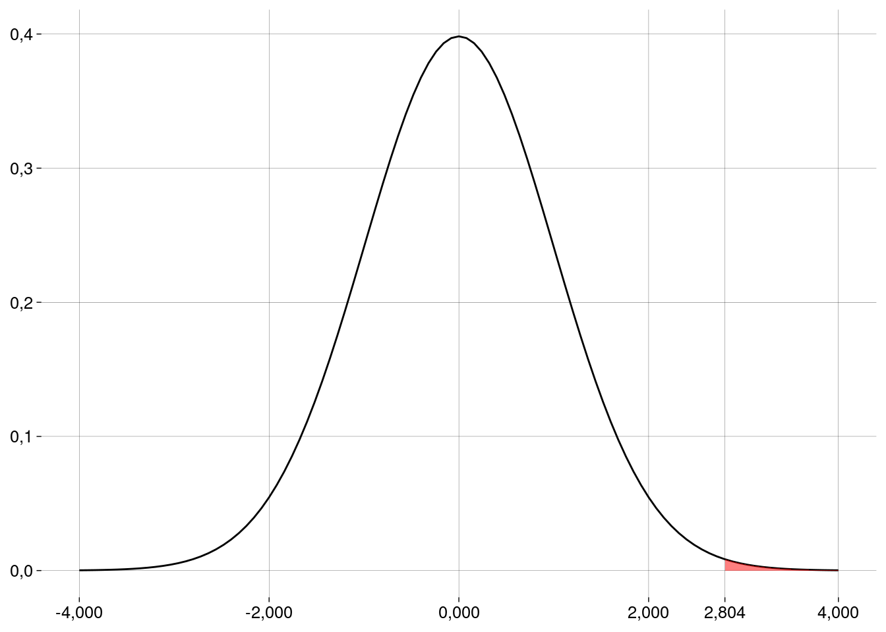 -
Este valor pode ser calculado em R (os valores da amostra estão em
salmoes$mirex):xbar <- mean(salmoes$mirex) s <- sd(salmoes$mirex) n <- length(salmoes$mirex) ep <- s / sqrt(n) m0 <- 0.08 t0 <- (xbar - m0) / ep valor_p <- pt(t0, n - 1, lower.tail = FALSE) valor_p## [1] 0,002856456 Conclusão: como o valor \(p\) é menor do que \(\alpha\), rejeitamos a hipótese de nulidade. Com este nível de significância, a amostra é evidência de que a contaminação é maior do que a permitida.
Em R
t.test(
salmoes$mirex,
alternative = 'greater',
mu = m0
)##
## One Sample t-test
##
## data: salmoes$mirex
## t = 2,8044, df = 149, p-value = 0,002856
## alternative hypothesis: true mean is greater than 0,08
## 95 percent confidence interval:
## 0,08464724 Inf
## sample estimates:
## mean of x
## 0,0913413.4.3 Relação entre testes e IC
Intervalos de confiança e testes de hipóteses são duas maneiras de enxergar a mesma inferência.
-
Lembre-se do exemplo sobre o tempo de gestação:

zt <- zsum.test( mean.x = xbar, sigma.x = σ, n.x = n, alternative = 'two.sided', mu = m0 ) zt## ## One-sample z-Test ## ## data: Summarized x ## z = -2,5, p-value = 0,01242 ## alternative hypothesis: true mean is not equal to 280 ## 95 percent confidence interval: ## 271,0801 278,9199 ## sample estimates: ## mean of x ## 275 Mantenha fixa a nossa amostra de \(25\) gestações.
A hipótese de nulidade foi rejeitada com \(\alpha = 0{,}05\) porque o valor que ela “defendia” (\(280\)) estava fora do intervalo de confiança de \(1 - \alpha = 0{,}95\).
Reciprocamente, mantendo \(\alpha = 0{,}05\), qualquer hipótese de nulidade que não for rejeitada vai “defender” um valor dentro do intervalo de confiança (entre \(271{,}08\) e \(278{,}92\)).
Experimente rodar a função
zsum.testcom diferentes valores demupara verificar que isto acontece.
13.4.5 Exercícios
Gestação
-
No exemplo, mude a hipótese alternativa para
\[ H_A : \mu < 280? \]
Sem refazer os cálculos, você consegue dizer qual é o novo valor \(p\)? Compare-o com o valor \(p\) original.
A hipótese de nulidade continuaria sendo rejeitada?
O que mudaria na chamada da função
zsum.test?
Salmões
Qual seria o valor \(p\) se a média amostral tivesse sido \(0{,}08\)ppm?
-
Qual seria o valor \(p\) se as hipóteses fossem
\[ \begin{align*} H_0 &: \mu = 0{,}08 \\ H_A &: \mu \neq 0{,}08 \end{align*} \]
e a média amostral tivesse sido \(0{,}08\)ppm?
Quando o valor \(p\) é \(0\)?
Testes e IC
O que acontece com o intervalo de confiança quando o teste de hipótese é unilateral?
Já que intervalos de confiança e testes de hipóteses contêm a mesma informação, qual dos dois procedimentos você acha mais intuitivo? Mais fácil de executar? Mais fácil de apresentar a um leigo?
App
Entre em https://rpsychologist.com/pvalue/
No “painel de controle”, deixe
sample dist. statistic(estatística da distribuição amostral) emMean(média). Com isto, a curva de baixo vai mostrar a distribuição amostral das médias.Qual o efeito, sobre a distribuição amostral, de aumentar o tamanho da amostra? Por quê?
Defina o tamanho da amostra como \(9\).
-
O app está configurado para o seguinte teste:
\[ \begin{align*} H_0 &: \mu = 100 \\ H_A &: \mu \neq 100 \end{align*} \]
-
Primeira situação: a hipótese de nulidade é verdadeira.
Faça o que você deve fazer para que, no app, \(H_0\) seja verdadeira.
Dica: a distribuição populacional “verdadeira” é representada pela curva de cima.Retire \(200\) amostras de \(9\) elementos cada, apertando quatro vezes o botão
+50.Quantas das \(200\) bolinhas são azuis? O que elas significam em termos de médias amostrais? Qual a relação delas com \(\alpha\)?
Mude
sample dist. statisticparaZ.O que significam os novos rótulos no eixo horizontal da distribuição amostral?
O que significam as linhas pontilhadas verticais? Em que valores do eixo horizontal elas estão?
Se o app nos deixasse mudar essas linhas pontilhadas de posição (o app não deixa), o que isto significaria?
Mude
sample dist. statisticparap-value. Agora, as \(200\) amostras aparecem distribuídas de acordo com seus valores \(p\).O que significam as bolinhas azuis?
O que significam as bolinhas vermelhas?
Com \(H_0\) verdadeira, como os valores \(p\) das \(200\) amostras estão distribuídos?
-
Segunda situação: a hipótese de nulidade é falsa.
Apague as amostras, clicando em
CLEAR.Mude
sample dist. statisticparamean.Defina o tamanho da amostra como \(9\).
Faça o que você deve fazer para que a média populacional passe a ser aproximadamente \(110\), tornando \(H_0\) falsa.
Retire \(200\) amostras de \(9\) elementos cada, apertando quatro vezes o botão
+50.Qual fração aproximada das \(200\) bolinhas são azuis? O que elas significam em termos de médias amostrais? Qual a relação delas com \(1 - \beta\) (a potência)?
Você pode alterar o tamanho das amostras agora, e o app vai atualizar as figuras magicamente. Qual deve ser o valor de \(n\) para que a potência ultrapasse \(0{,}8\)?
Mude
sample dist. statisticparap-value.O que significam as bolinhas azuis?
O que significam as bolinhas vermelhas?
Com \(H_0\) falsa, como os valores \(p\) das \(200\) amostras estão distribuídos?
-
Terceira situação: a hipótese de nulidade é falsa, mas não muito.
Apague as amostras, clicando em
CLEAR.Faça o que você deve fazer para que a média populacional passe a ser aproximadamente \(105\), tornando \(H_0\) falsa, mas com uma diferença menor para a média verdadeira.
Refaça os passos restantes da segunda situação.
Comente os resultados.
-
Quarta situação: a hipótese de nulidade é falsa, e muito.
Apague as amostras, clicando em
CLEAR.Faça o que você deve fazer para que a média populacional passe a ser aproximadamente \(120\), tornando \(H_0\) falsa, com uma diferença muito grande para a média verdadeira.
Refaça os passos restantes da segunda situação.
Comente os resultados.
-
Desafio:
A curva da parte superior da página, de onde “pingam” as médias amostrais, é uma distribuição normal.
Durante os exercícios acima, você descobriu como alterar a média dessa normal.
Você consegue calcular o desvio-padrão dessa normal?
Dica: considere a fórmula que dá o erro-padrão da distribuição amostral (a curva de baixo).
13.6 Testes de hipóteses com duas amostras
13.6.1 Diferença entre proporções
Exemplo: jovens online
Duas amostras:
\(141\) de \(248\) rapazes com idades entre \(15\) e \(17\) anos possuem um perfil online.
\(179\) de \(256\) meninas com idades entre \(15\) e \(17\) anos possuem um perfil online.
A diferença entre as proporções é significativa?
Condições
-
As mesmas condições de testes com uma amostra precisam ser verificadas:
Independência.
Amostras aleatórias e representativas.
Tamanho da amostra menor que \(10\%\) da população.
-
E mais:
Independência dos grupos.
Cada grupo deve ter no mínimo \(10\) sucessos e \(10\) fracassos.
Hipóteses
-
O teste, agora, é sobre a diferença entre as proporções:
\[ H_0 : p_h - p_m = 0 \\ H_A : p_h - p_m \neq 0 \]
Erro padrão
A diferença \(p_h - p_m\) é uma variável aleatória.
-
A variância da diferença é a soma das variâncias:
\[ \sigma^2_{p_h - p_m} = \sigma^2_{p_h} + \sigma^2_{p_m} \]
-
A variância da proporção amostral é
\[ \sigma^2(\hat p) = \frac{p(1 - p)}{n} \]
-
Logo, a variância da diferença \(p_h - p_m\) será
\[ \sigma^2(\hat p_h - \hat p_m) = \frac{p_h(1 - p_h)}{n_h} + \frac{p_m(1 - p_m)}{n_m} \]
-
Daí, o desvio-padrão da distribuição amostral da diferença é
\[ \sigma(\hat p_h - \hat p_m) = \sqrt{\frac{p_h(1 - p_h)}{n_h} + \frac{p_m(1 - p_m)}{n_m}} \]
-
Como não sabemos os valores verdadeiros de \(p_h\) e \(p_m\), usamos as proporções amostrais para obter o erro-padrão:
\[ EP(\hat p_h - \hat p_m) = \sqrt{\frac{\hat p_h(1 - \hat p_h)}{n_h} + \frac{\hat p_m(1 - \hat p_m)}{n_m}} \]
Se fôssemos construir um intervalo de confiança, usaríamos este erro-padrão.
Mas, em um teste de hipóteses, estamos supondo que \(H_0\) é verdadeira, o que equivale a dizer que \(p_h = p_m\).
-
Então, podemos calcular uma proporção ponderada, ou agregada:
\[ \bar p = \frac{\text{sucessos}_h + \text{sucessos}_m}{n_h + n_m} \]
-
Aí, calculamos o erro-padrão com este valor em vez de \(\hat p_h\) e \(\hat p_m\):
\[ EP(\hat p_h - \hat p_m) = \sqrt{\frac{\bar p(1 - \bar p)}{n_h} + \frac{\bar p(1 - \bar p)}{n_m}} \]
Valores
Tamanhos das amostras: \(n_h = 248\) e \(n_m = 256\).
Proporções amostrais: \(\hat p_h = 0{,}57\) e \(\hat p_m = 0{,}7\).
Hipótese de nulidade: \(H_0 : p_h - p_m = 0\).
Hipótese alternativa: \(H_A : p_h - p_m \neq 0\).
Nível de significância: \(\alpha = 0{,}05\).
Cálculos
n_h <- 248
sucessos_h <- 141
p_h <- sucessos_h / n_h
n_m <- 256
sucessos_m <- 179
p_m <- sucessos_m / n_m
d0 <- 0
d_chapeu <- p_m - p_h
d_cauda_esquerda <- d0 - (d_chapeu - d0)
p_agregado <- (sucessos_h + sucessos_m) / (n_h + n_m)
ep <- sqrt(
p_agregado * (1 - p_agregado) / n_h +
p_agregado * (1 - p_agregado) / n_m
)
ep## [1] 0,04289659Valor \(p\) e conclusão
valor_p <-
pnorm(d_cauda_esquerda, mean = d0, sd = ep) +
pnorm(d_chapeu, mean = d0, sd = ep, lower.tail = FALSE)
valor_p## [1] 0,002317759- Este valor é menor do que \(\alpha = 0{,}05\). Logo, nossa amostra é evidência para rejeitar a hipótese de nulidade neste nível de significância.
Em R
prop.test(
x = c(sucessos_m, sucessos_h),
n = c(n_m, n_h),
alternative = 'two.sided',
correct = FALSE
)##
## 2-sample test for equality of proportions without continuity correction
##
## data: c(sucessos_m, sucessos_h) out of c(n_m, n_h)
## X-squared = 9,2792, df = 1, p-value = 0,002318
## alternative hypothesis: two.sided
## 95 percent confidence interval:
## 0,04727054 0,21407019
## sample estimates:
## prop 1 prop 2
## 0,6992188 0,568548413.6.2 Diferença entre médias (amostras independentes)
Exemplo: olhos \(\times\) flores
Em \(2006\), pesquisadores em uma universidade inglesa fizeram um experimento para verificar se as pessoas alteram seu comportamento quando se sentem vigiadas.
Na universidade, havia uma copa onde chá, café e leite eram disponibilizados para todos que frequentavam o local.
Na parede, próximo às bebidas, ficava um cartaz com as instruções para pagamento e os valores de cada bebida. As pessoas deviam depositar o dinheiro em uma caixa próxima às bebidas.
Junto a esse cartaz, os pesquisadores afixaram outro, com imagens.
As imagens eram trocadas regularmente. Durante uma semana, eram flores; durante uma semana, era um par de olhos. Esta alternância foi mantida durante \(10\) semanas.
A disposição da copa era tal que, se alguém decidisse não pagar, ninguém perceberia.
Os pesquisadores controlaram a arrecadação por litro de leite consumido por semana.
Em média, esta arrecadação foi quase \(3\) vezes maior nas semanas em que o cartaz continha o par de olhos, em comparação com as semanas em que o cartaz continha as flores:

- Este exemplo é baseado em https://www.ncbi.nlm.nih.gov/pmc/articles/PMC1686213/, de onde foi retirada a imagem acima.
Amostras
As \(5\) semanas com os cartazes dos olhos formam uma amostra.
Nessas semanas, a arrecadação média por litro de leite foi de \(0{,}417\) libras, com desvio-padrão de \(0{,}1811\).
As \(5\) semanas com os cartazes das flores formam a outra amostra.
Nessas semanas, a arrecadação média por litro de leite foi de \(0{,}151\) libras, com desvio-padrão de \(0{,}067\).
-
Em R:
Condições
Independência: vamos supor que as contribuições de uma pessoa são independentes das das outras.
Amostras aleatórias e representativas: vamos supor que essas contribuições representam a população de interesse (contribuições de frequentadores e funcionários da universidade? de todos os cidadãos ingleses? de toda a humanidade?)
-
Tamanho das amostras:
As amostras são menos do que \(10\%\) da população.
As amostras são pequenas (\(n_1 = n_2 = 5\)). Precisamos ser cautelosos quanto às conclusões.
Independência dos grupos: o comportamento das pessoas nas semanas dos olhos é independente do comportamento das mesmas pessoas nas semanas das flores? Vamos supor que sim, embora esta seja uma suposição arriscada.
-
Dados aproximadamente normais: com amostras tão pequenas, é difícil avaliar.
-
Para as semanas dos olhos:
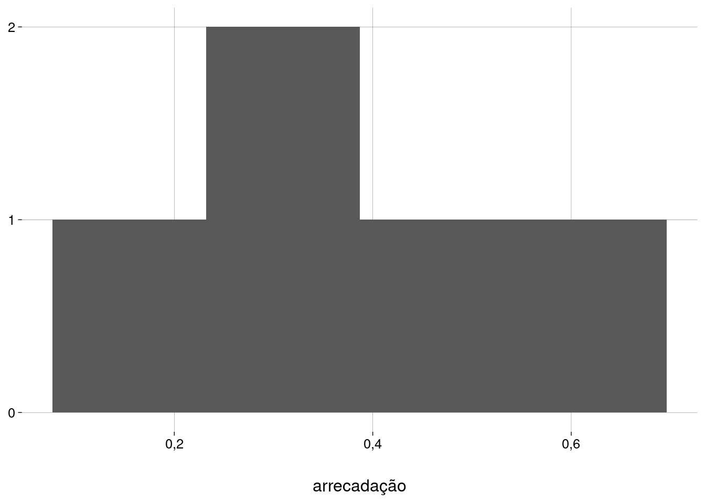 -
Para as semanas das flores:
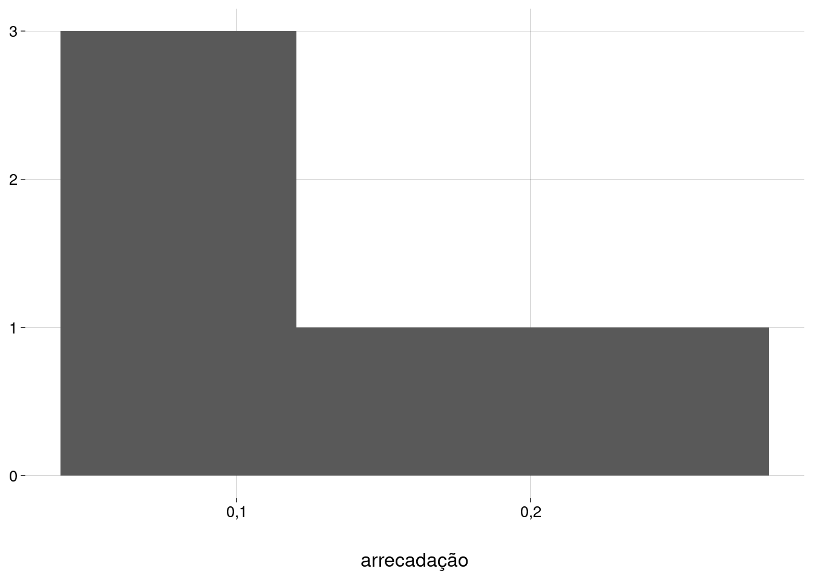 -
Agregando as duas amostras:
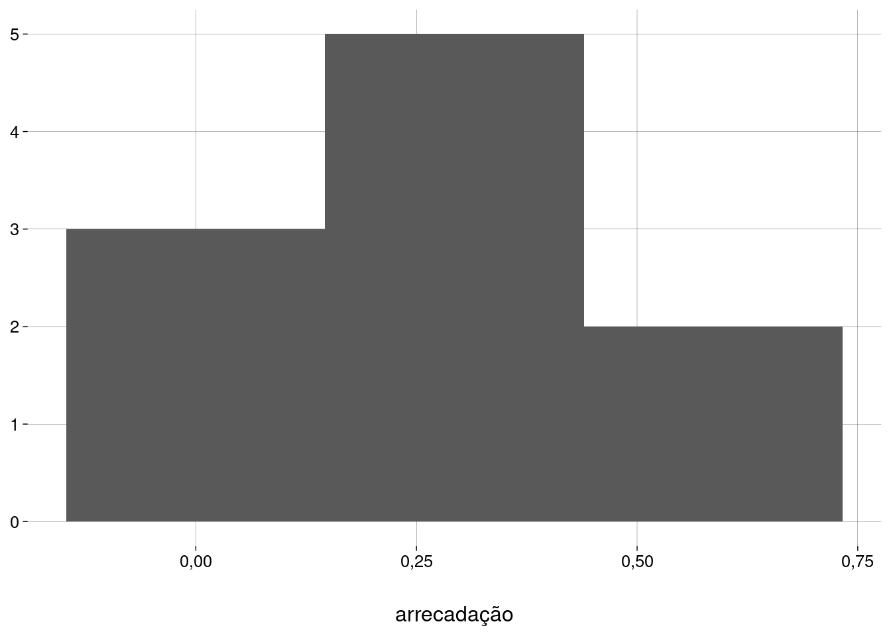 Pelo menos o terceiro histograma (com a união das duas amostras) é unimodal e simétrico. Vamos prosseguir com cautela.
-
Hipóteses
-
O teste, agora, é sobre a diferença entre as médias:
\[ H_0 : \mu_1 - \mu_2 = 0 \\ H_A : \mu_1 - \mu_2 \neq 0 \]
onde \(\mu_1\) é a média da arrecadação nas semanas dos olhos, e \(\mu_2\) é a média da arrecadação nas semanas das flores.
Erro padrão (variâncias diferentes)
Mesmo quando supomos \(H_0\) — i.e., que as médias populacionais \(\mu_1\) e \(\mu_2\) são iguais — não podemos afirmar nada sobre os desvios-padrão das duas subpopulações: as semanas dos olhos e as semanas das flores.
-
Podemos estimar as variações das duas amostras criando um boxplot:
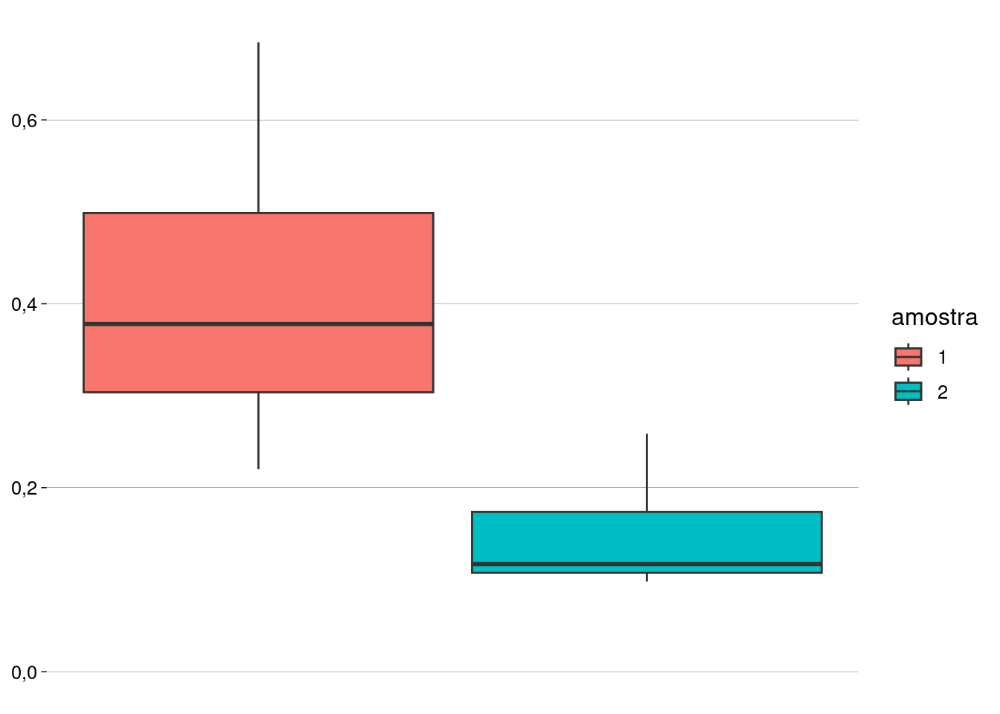A amostra \(1\) parece ter uma variação maior do que a amostra \(2\).
-
De fato, o desvio-padrão da amostra \(1\) é quase o triplo do da amostra \(2\).
sd(amostra_1)## [1] 0,1811006sd(amostra_2)## [1] 0,06700978 -
Então, estimamos a variância das semanas dos olhos por
\[ \hat \sigma^2_1 = \frac{s^2_1}{n_1} \]
e estimamos a variância das semanas das flores por
\[ \hat \sigma^2_2 = \frac{s^2_2}{n_2} \]
-
Daí, supondo \(H_0\), a estimativa da variância populacional é
\[ \hat \sigma^2 = \frac{s^2_1}{n_1} + \frac{s^2_2}{n_2} \]
-
E o erro-padrão será
\[ EP = \sqrt{\frac{s^2_1}{n_1} + \frac{s^2_2}{n_2}} \]
Valores
Tamanhos das amostras: \(n_1 = n_2 = 5\).
Médias amostrais: \(\bar x_1 = 0{,}417\) e \(\bar x_2 = 0{,}151\).
desvios-padrão amostrais: \(s_1 = 0{,}1811\) e \(s_2 = 0{,}067\).
Hipótese de nulidade: \(H_0 : \mu_1 - \mu_2 = 0\).
Hipótese alternativa: \(H_A : \mu_1 - \mu_2 \neq 0\).
Nível de significância: \(\alpha = 0{,}05\).
Cálculos
n_1 <- length(amostra_1)
xbarra_1 <- mean(amostra_1)
s_1 <- sd(amostra_1)
n_2 <- length(amostra_2)
xbarra_2 <- mean(amostra_2)
s_2 <- sd(amostra_2)
d0 <- 0
dx <- xbarra_1 - xbarra_2
d_cauda_esquerda <- d0 - dx
ep <- sqrt(s_1^2 / n_1 + s_2^2 / n_2)
ep## [1] 0,08635708A distribuição amostral de \(\bar x_1 - \bar x_2\), supondo \(H_0\)
Como não sabemos o desvio-padrão populacional, precisamos usar a distribuição \(t\).
-
A média da distribuição \(t\) é \(0\). Precisamos padronizar os valores:
dx## [1] 0,266tx <- (dx - d0)/ep tx## [1] 3,080234t_cauda_esquerda <- (d_cauda_esquerda - d0)/ep -
Quantos graus de liberdade?
O número de graus de liberdade é dado por
\[ \nu = \frac{ \left( \frac{s_1^2}{n_1} + \frac{s_2^2}{n_2} \right)^2 }{ \frac{(s_1^2 / n_1)^2}{n_1 - 1} + \frac{(s_2^2 / n_2)^2}{n_2 - 1} } \]
gl <- (s_1^2 / n_1 + s_2^2 / n_2)^2 / ( (s_1^2 / n_1)^2 / (n_1 - 1) + (s_2^2 / n_2)^2 / (n_2 - 1) ) gl## [1] 5,075131 -
Graficamente:
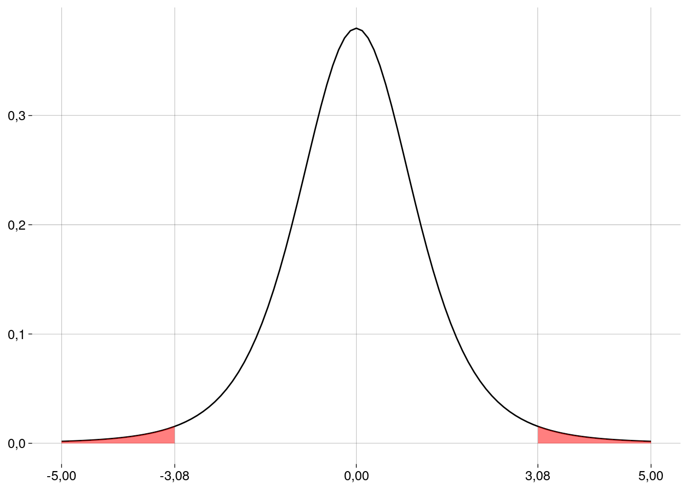
Em R
t.test(amostra_1, amostra_2)##
## Welch Two Sample t-test
##
## data: amostra_1 and amostra_2
## t = 3,0802, df = 5,0751, p-value = 0,02693
## alternative hypothesis: true difference in means is not equal to 0
## 95 percent confidence interval:
## 0,04499686 0,48700314
## sample estimates:
## mean of x mean of y
## 0,417 0,151E se as arrecadações médias tiverem o mesmo \(\sigma\)?
O cálculo do erro-padrão muda.
-
A variância agregada é
\[ s^2 = \frac{(n_1 - 1)s_1^2}{(n_1 + n_2 - 2)} + \frac{(n_2 - 1)s_2^2}{(n_1 + n_2 - 2)} \]
-
O erro-padrão fica
\[ EP = \sqrt{\frac{s^2}{n_1} + \frac{s^2}{n_2}} \]
onde \(s^2\) é a variância agregada, calculada acima.
var_agregada <- ( (n_1 - 1) * var(amostra_1) + (n_2 - 1) * var(amostra_2) ) / (n_1 + n_2 - 2) ep <- sqrt(var_agregada / n_1 + var_agregada / n_2) ep## [1] 0,08635708 -
O número de graus de liberdade fica mais simples:
gl <- n_1 + n_2 - 2 gl## [1] 8 -
Refazendo os cálculos:
tx <- (dx - d0)/ep tx## [1] 3,080234t_cauda_esquerda <- (d_cauda_esquerda - d0)/ep valor_p <- pt(t_cauda_esquerda, gl) + pt(tx, gl, lower.tail = FALSE) valor_p## [1] 0,01511156 Supondo o mesmo desvio-padrão para as duas subpopulações, o valor \(p\) fica ainda menor. Como o valor é menor do que \(\alpha = 0{,}05\), nossa amostra é evidência para rejeitar a hipótese de nulidade neste nível de significância.
-
Em R:
t.test(amostra_1, amostra_2, var.equal = TRUE)## ## Two Sample t-test ## ## data: amostra_1 and amostra_2 ## t = 3,0802, df = 8, p-value = 0,01511 ## alternative hypothesis: true difference in means is not equal to 0 ## 95 percent confidence interval: ## 0,06686022 0,46513978 ## sample estimates: ## mean of x mean of y ## 0,417 0,151
13.6.3 Diferença entre médias (amostras pareadas)
Exemplo: quilometragem
Durante um ano, um órgão público mediu a quilometragem total de seus \(11\) motoristas em um regime de trabalho de \(5\) dias por semana.
No ano seguinte, os mesmos \(11\) motoristas trabalharam \(4\) dias por semana, e as quilometragens totais foram medidas novamente.
-
Os resultados foram:
A diferença nas quilometragens foi significativa?
Exemplo baseado em https://www.thefreelibrary.com/Four-day+work+week+improves+environment.-a019280161
As amostras agora são pareadas.
O que nos interessa é a diferença na quilometragem de cada motorista.
Vamos fazer um teste \(t\) sobre as diferenças (os valores da última coluna).
Condições
Independência entre os pares: o comportamento de cada motorista independe do comportamento dos outros.
Amostras aleatórias e representativas: vamos supor que sim.
Tamanho das amostras: as amostras são menos do que \(10\%\) da população.
-
Dados aproximadamente normais: vejamos um histograma das diferenças:
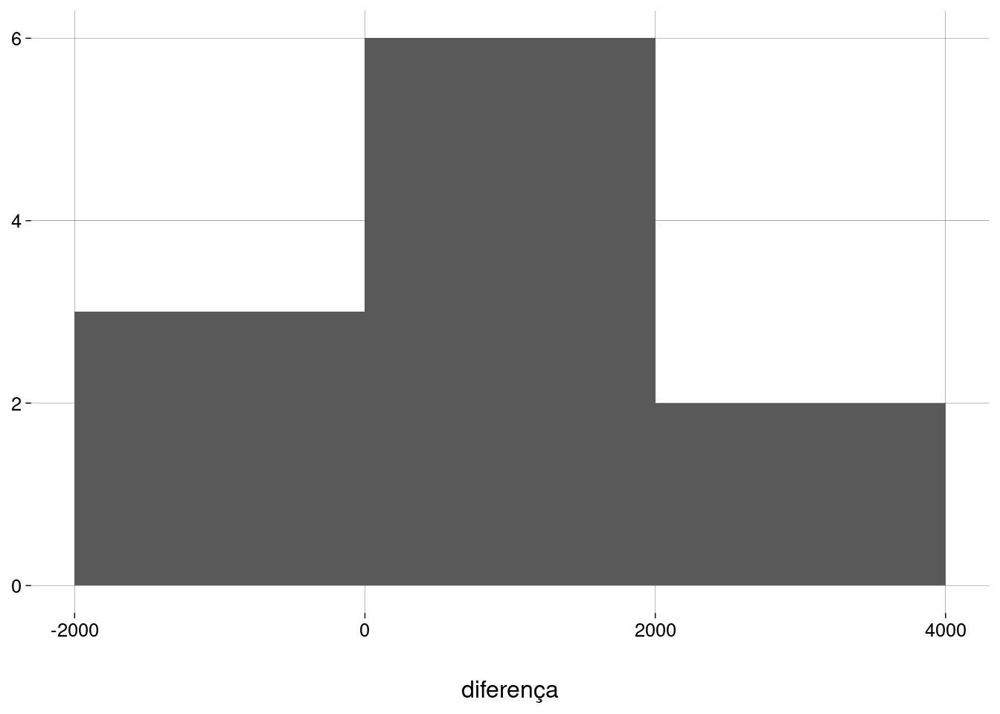
Hipóteses
-
O teste, agora, é sobre a média das diferenças:
\[ H_0 : \mu_d = 0 \\ H_A : \mu_d \neq 0 \]
Erro padrão
-
Como o erro-padrão de \(\mu\), mas, aqui, \(n\) é o número de pares.
\[ EP = \frac{s_d}{\sqrt n} \]
onde \(s_d\) é o desvio-padrão das diferenças.
Valores
Tamanho da amostra: \(n = 11\).
Média amostral: \(\bar d = 982\).
desvio-padrão amostral: \(s_d = 1.139{,}57\).
Hipótese de nulidade: \(H_0 : \mu_d = 0\).
Hipótese alternativa: \(H_A : \mu_d \neq 0\).
Nível de significância: \(\alpha = 0{,}05\).
Cálculos
n <- length(df$diferença)
d_barra <- mean(df$diferença)
s_d <- sd(df$diferença)
d0 <- 0
ep <- s_d / sqrt(n)
ep## [1] 343,5928A distribuição amostral de \(\bar d\)
Como não sabemos o desvio-padrão populacional, precisamos usar a distribuição \(t\).
-
A média da distribuição \(t\) é \(0\). Precisamos padronizar os valores:
d_barra## [1] 982t_barra <- (d_barra - d0)/ep t_barra## [1] 2,858034 -
O número de graus de liberdade é \(n - 1 = 10\).
gl <- n - 1 -
Graficamente:
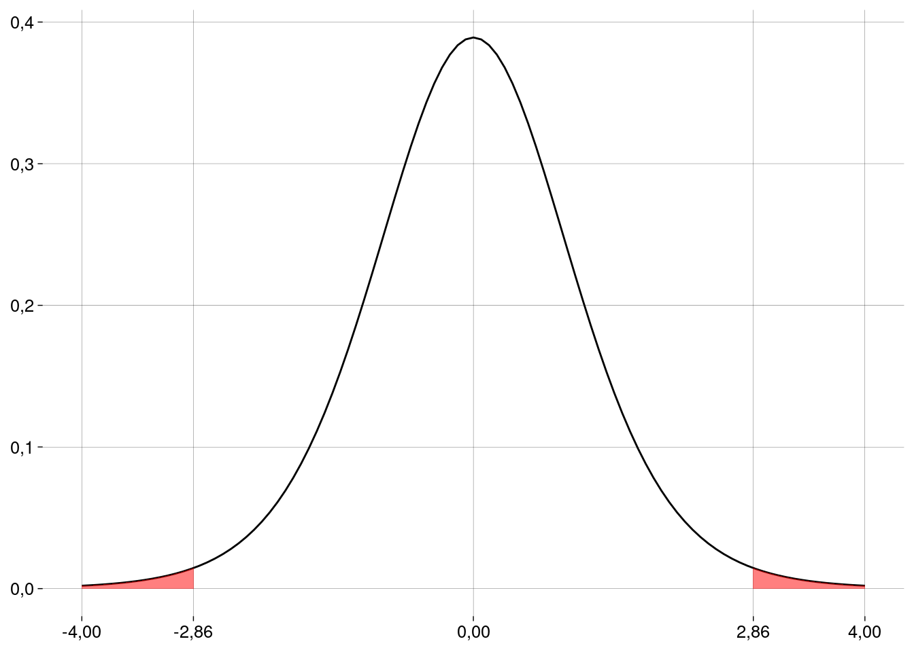
Valor \(p\) e conclusão
valor_p <- 2 * pt(t_barra, gl, lower.tail = FALSE)
valor_p## [1] 0,01701413- Este valor é menor do que \(\alpha = 0{,}05\), nossa amostra é evidência para rejeitar a hipótese de nulidade neste nível de significância. A quilometragem média variou de um ano para o outro.
Em R
t.test(
df$dias_5,
df$dias_4,
paired = TRUE
)##
## Paired t-test
##
## data: df$dias_5 and df$dias_4
## t = 2,858, df = 10, p-value = 0,01701
## alternative hypothesis: true mean difference is not equal to 0
## 95 percent confidence interval:
## 216,4276 1747,5724
## sample estimates:
## mean difference
## 98213.7 Outros testes em R
Diversas outras funções em R apresentam os resultados de testes em termos de intervalos de confiança e/ou valores \(p\).
13.7.1 Teste de normalidade de Shapiro-Wilk
A hipótese de nulidade é \(H_0: {}\) a amostra vem de uma distribuição normal.
-
Então, um valor \(p\) alto é evidência a favor da normalidade dos dados:
x <- rnorm(100, 5, 3) shapiro.test(x)## ## Shapiro-Wilk normality test ## ## data: x ## W = 0,99388, p-value = 0,9349x <- runif(100, 0, 1) shapiro.test(x)## ## Shapiro-Wilk normality test ## ## data: x ## W = 0,9454, p-value = 0,0004182
13.7.2 Teste para comparar variâncias
A hipótese de nulidade é \(H_0 : \sigma^2_x / \sigma^2_y = r\), onde o valor default de \(r\) é \(1\).
-
Testando as amostras do experimento olhos \(\times\) flores:
var.test(amostra_1, amostra_2)## ## F test to compare two variances ## ## data: amostra_1 and amostra_2 ## F = 7,304, num df = 4, denom df = 4, p-value = 0,08003 ## alternative hypothesis: true ratio of variances is not equal to 1 ## 95 percent confidence interval: ## 0,7604789 70,1518943 ## sample estimates: ## ratio of variances ## 7,304042
13.7.3 Teste de correlação
A hipótese de nulidade é \(H_0 : {}\) as variáveis (pareadas) \(x\) e \(y\) não são correlacionadas.
-
Testando as amostras do exemplo dos motoristas:
cor.test(df$dias_4, df$dias_5)## ## Pearson's product-moment correlation ## ## data: df$dias_4 and df$dias_5 ## t = 13,671, df = 9, p-value = 0,0000002518 ## alternative hypothesis: true correlation is not equal to 0 ## 95 percent confidence interval: ## 0,9101992 0,9941362 ## sample estimates: ## cor ## 0,9767585